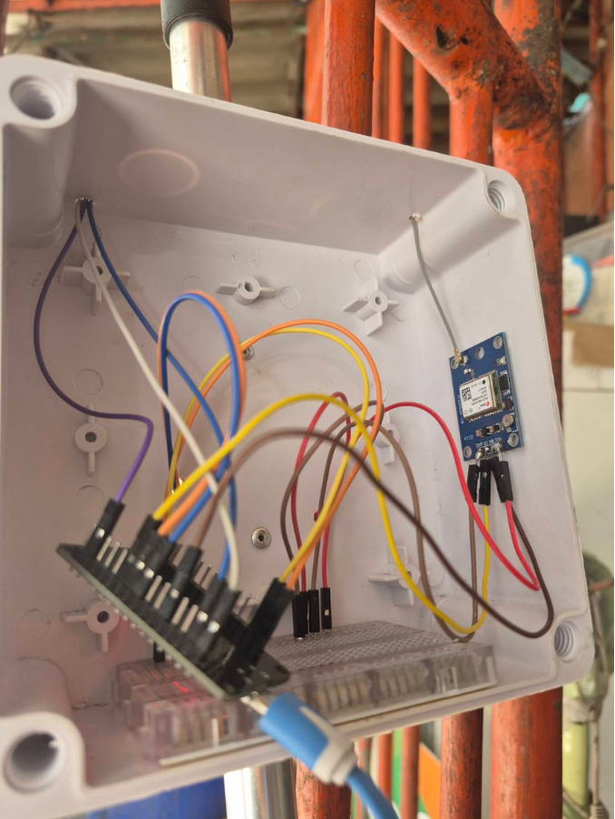
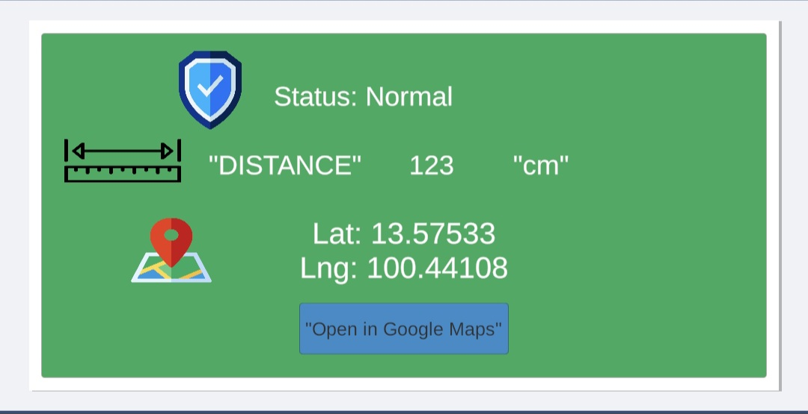
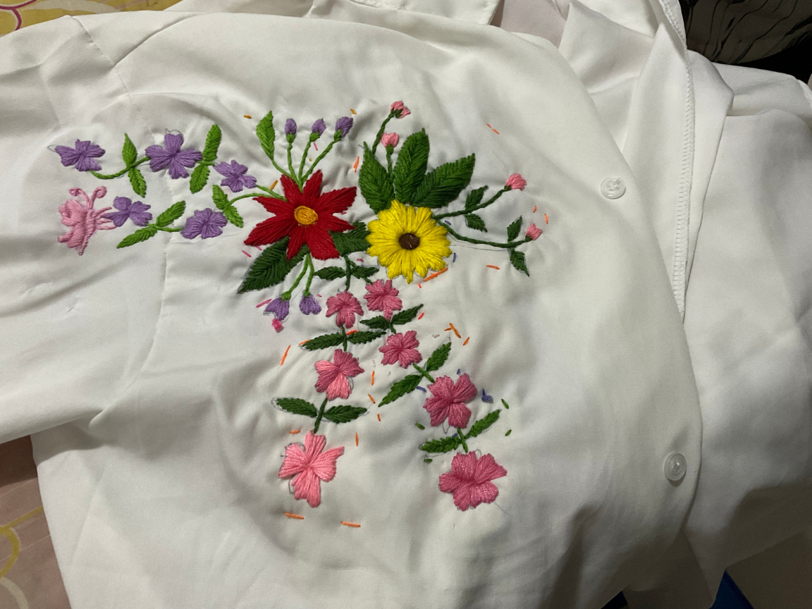
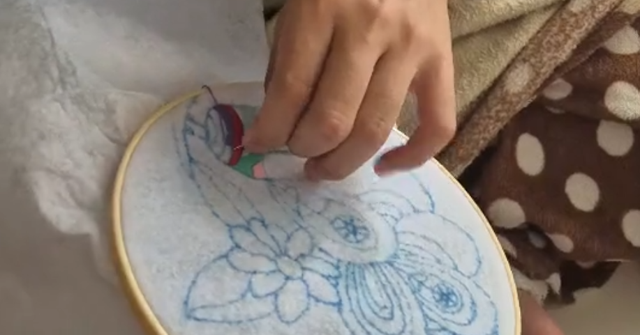

Medical Innovation
Mobile Notification Alert System
ไม้เท้าผู้พิการทางสายตาที่ส่งข้อมูลไปยังแอปในมือถือ Android เพื่อเพิ่มความปลอดภัย ให้ผู้พิการทางสายตาในการเดินทางโดยลดความเสี่ยงจากการชนหรือสะดุดสิ่งกีดขวาง, ความสะดวกและอิสระในการเคลื่อนที่ โดยไม่ต้องพึ่งพาผู้อื่นมากเกินไป, ยกระดับคุณภาพชีวิตและความมั่นใจของผู้พิการทางสายตาในการใช้ชีวิตประจำวัน



Android App
Telegram Messenger
Ultrasonic Sensors
ESP32
Microcontroller
Handicraft and Fashion
เสื้อที่ไม่ธรรมดา
ความหมายของเสื้อตัวนี้สะท้อนถึงความรักและความใส่ใจของแฟน ที่สามารถเห็นความงดงามในดอกไม้ ไม่ว่าจะเป็นชนิดใดก็ตาม และสามารถตีความความหมายของมันผ่านการมอบดอกไม้ให้กัน ทำให้เกิดความชื่นชอบดอกไม้เป็นพิเศษ จึงเป็นแรงบันดาลใจให้ผู้สวมเสื้อลงมือปักลวดลายดอกไม้ด้วยตัวเอง เสมือนเป็นสิ่งแทนใจที่สื่อถึงความรักและความเอาใจใส่ที่แฟนมอบให้เสมอ และแฟนมองผมเป็นนกยูง นกยูงมีความหายก็คือ ความสวยงาม เสน่ที่เป็นเอกลักษณ์โดยเฉพาะหางของนกยูงที่มีสีสันสวยงาม มองแล้วมันรู้สึกสบายตาและอิ่มใจ ทำให้ผมเกิดไอเดียในการปักลายนี้ขึ้นมา เพราะมันสื่อให้เห็นถึงความเป็นตัวของตัวผม ทั้งความมีเสน่ในตัวผม สีสันที่หลากหลายก็เปรียบเหมือนผมที่มีนิสัยที่มีสีสันสวยงาม น่ามอง ดึงดูด ทำให้เสื้อทุกตัวที่ผมปักและนำไปใส่จะสื่อถึงความเป็นตัวของผมเอง แต่มันสำคัณตรงที่แฟนเป็นคนให้เรื่องราวต่างๆ เป็นเรื่องราวที่เกี่ยวกับที่แม้กระทั้งตัวผมเองยังไม่รู้ความเป็นตัวของตัวเอง



Handicraft
Hand Embroidery
Fashion Design
Storytelling Design